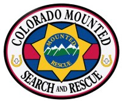

.gif)
Mounted Search + Rescue
Mounted Search + Rescue
(Colorado)
Welcome to the Mounted Rescue website , home of Unit A , who provide Mounted Search and Rescue in South West Colorado and region.
Mounted Search and Rescue is made up of volunteers who have horses and those who do not - every time a Mounted Team is deployed on a search or rescue our stalwart behind the scene supporters are also heavily involved in supporting the mission.
Mounted Search and Rescue often known as MSAR is especially useful in the wilderness areas of South West Colorado , a team on horse back can cover a lot of ground very quickly , or they can reach a target destination often more easily and certainly more quickly than on foot.
If you have an interest in Mounted Search and Rescue please visit with us , you will be very welcome. ** New - in 2007 Mounted Rescue will also be recruiting and training members for ground team work - this will expand our ability to serve our community.
Click here to enter our general site. ENTER
Regular monthly meetings held at - Fire Station #1 on North Pagosa - upstairs , the first Wednesday of the month at 7pm.